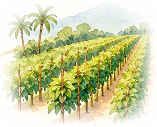
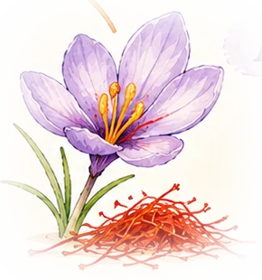

Capítol 9
Per què avui són barates
Què va canviar i les podríem plantar aquí?

⚡ En 30 segons
- El preu no va baixar de cop amb Vasco da Gama. Va baixar a poc a poc, al llarg de segles.
- Holandesos i anglesos van crear grans companyies comercials al segle XVII. Els holandesos van imposar un amb una violència extrema a les illes Banda.
- La clau va ser el : plantes de clau, nou moscada i pebre es van portar a altres terres tropicals. Quan les espècies van créixer a molts llocs, ningú no en va poder controlar el preu.
- Avui el primer productor de pebre és el Vietnam, i viatja en vaixells portacontenidors gegants. A Catalunya no s’hi pot fer pebre, però sí safrà.
Fa molt de temps, les espècies creixien en molt pocs llocs. Ara es planten en molts països.
Hi ha moltes espècies i viatgen en vaixells enormes. Per això són barates.
A Catalunya no podem plantar pebre: fa massa fred i plou poc. Però sí que podem fer safrà.
Cinc segles de baixada
- 1430-1470 — El preu del pebre a Venècia ja baixa, abans dels grans viatges (F. Lane).
- 1498-1600 — Els portuguesos porten espècies per l’Àfrica, però no aconsegueixen controlar tot el comerç: la ruta del mar Roig continua funcionant. Els preus europeus no cauen de cop.
- Segle XVII — Neixen les companyies holandesa (VOC) i anglesa de les Índies Orientals. El 1621 els holandesos conquereixen les illes Banda: la major part de la població mor, és expulsada o esclavitzada, i les plantacions passen a mans holandeses.
- Segles XVII-XVIII — La diferència de preu entre Àsia i Europa s’estreny molt (O’Rourke i Williamson): el comerç és més directe i més gran.
- 1770 — El francès Pierre Poivre aconsegueix portar plançons de clau i nou moscada a l’illa Maurici. Es trenca el monopoli holandès.
- Segle XIX — El clau arriba a Zanzíbar (cap al 1812) i els britànics planten nou moscada a Sri Lanka, Singapur, l’Índia i l’illa de Grenada, al Carib.
- Segle XX-avui — El pebre es conrea al Brasil, a l’Àfrica i sobretot al Vietnam, avui el primer productor mundial. Els portacontenidors abarateixen el transport.
Quant costen avui?
Preu per quilo en un supermercat (11 de novembre de 2026), comprant pots petits.
Compte: en pots petits, el preu per quilo és molt més alt que a l’engròs. Tot i així, un pot de pebre costa uns pocs minuts de feina. Recordes la calculadora del capítol 1?
🌱 Es pot plantar a Catalunya?
Tria una espècia i compara què necessita amb el clima català: 500-700 mm de pluja a l’any, estius secs i glaçades a l’hivern.
Pluja anual necessària

El safrà català
A l’edat mitjana, Catalunya i Aragó exportaven safrà. Avui encara se’n fa a Horta de Sant Joan i a la Segarra, i a la Conca de Barberà es va recuperar el 2007. Per fer-ne un quilo calen unes 200.000 flors collides a mà: per això encara és car.
Mirada crítica
Les espècies barates d’avui també tenen una història d’injustícia: monopolis imposats per la força, persones esclavitzades a les plantacions i, encara avui, pagesos que cobren molt poc. Què hi podem fer com a consumidors?